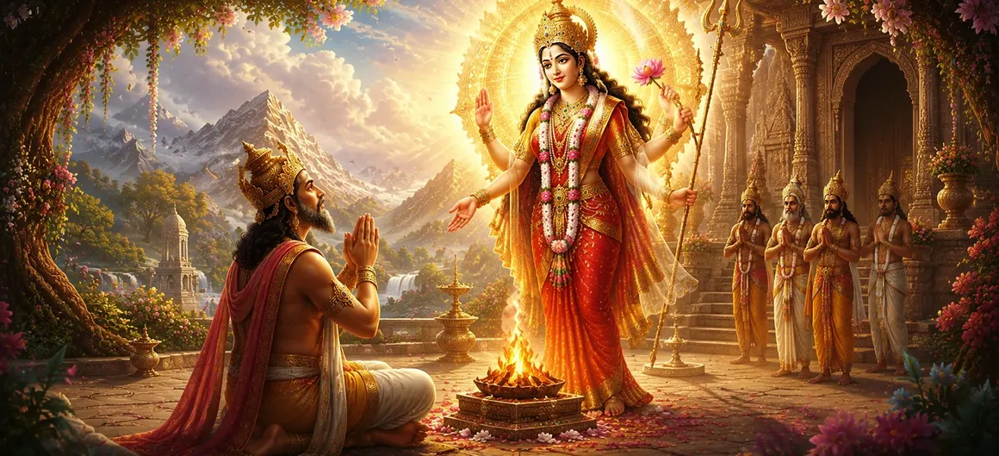

After the gods offered their heartfelt hymn to Goddess Durgā, the Divine Mother was pleased with their devotion and concern for the welfare of creation. The cosmic plan that had been discussed by Brahmā and Viṣṇu now began to move forward. Among those destined to play a crucial role in this sacred drama was Dakṣa Prajāpati, one of the great progenitors of living beings and a respected ruler among the celestial beings.
Dakṣa's future would become closely connected with the destiny of the Divine Mother herself. Through the grace of the Goddess, he would receive a boon that would transform not only his own life but also the course of events that would eventually lead to the manifestation of Goddess Sati. This chapter reveals how Divine blessings are bestowed upon those chosen to serve a higher purpose within the cosmic order.
Dakṣa Prajāpati was known for his dedication, discipline, and commitment to his responsibilities. Yet he understood that worldly achievements alone could not fulfill the highest purpose of life. Desiring to participate in the Divine plan and seeking the blessings of the Supreme Mother, he directed his mind toward devotion and prayer.
Pleased by Dakṣa’s sincerity and devotion, the Divine Mother manifested before him in her radiant form. Her presence illuminated the surroundings with divine brilliance, filling Dakṣa’s heart with awe and reverence. Recognizing the immeasurable grace bestowed upon him, he bowed deeply before the Goddess.
The Divine Mother addressed Dakṣa with compassion and kindness. She acknowledged his devotion and invited him to express the desire hidden within his heart. Her words reassured him that sincere devotion never goes unnoticed and that those who worship with faith eventually receive divine guidance and blessings.
With humility and devotion, Dakṣa revealed his heartfelt wish before the Goddess. He prayed for a blessing that would allow him to serve the Divine purpose and contribute to the welfare of creation. Rather than seeking power or personal gain, he desired a gift that would honor the Supreme Mother and benefit the entire universe.
Dakṣa approached the Divine Mother with sincere faith and reverence.
He sought blessings not for pride but for a higher purpose.
His desire was connected with the welfare of the universe.
The Divine Mother was deeply pleased by Dakṣa’s pure intention. Recognizing his role within the cosmic plan, she granted the boon he desired. Her blessing carried profound significance, for it would influence not only Dakṣa’s destiny but also the future course of the sacred events that were destined to unfold.
The boon included a sacred promise connected with the future manifestation of the Divine Mother. Through Dakṣa’s lineage, an extraordinary event would take place—one that would bring immense spiritual significance to the worlds and become central to the unfolding story of Lord Shiva and Goddess Sati.
Overwhelmed by the Divine Mother's compassion, Dakṣa offered repeated salutations and words of praise. He understood that the blessing he had received was far greater than any worldly treasure. Filled with gratitude, he resolved to remain devoted to the Divine will and faithfully fulfill the responsibilities entrusted to him.
Dakṣa’s story teaches that Divine blessings are often granted to those who seek not personal gain but the welfare of others. His devotion, humility, and willingness to serve a higher purpose made him worthy of receiving a boon that would shape the destiny of the universe. True grace descends when desire is purified by selflessness and devotion.
The boon granted to Dakṣa was not merely a personal blessing. It was an essential part of the Divine plan that would eventually lead to the manifestation of Goddess Sati. Through this blessing, the cosmic drama moved one step closer to fulfillment, demonstrating how individual lives can become instruments of a much greater purpose.
From this moment onward, Dakṣa’s life became intertwined with the unfolding destiny of the Divine Mother. Though the future remained hidden, the blessing he received had already set powerful events into motion. The worlds would soon witness the arrival of a divine presence whose influence would transform the course of sacred history.
Having received the Divine Mother's blessing, Dakṣa returned with renewed purpose and gratitude. The foundation had now been laid for the next stage of the story. The following chapter reveals how the promise contained within this boon begins to unfold and how the Divine Mother prepares to enter the world through Dakṣa’s family.
"Divine blessings are never accidental. When devotion is joined with humility and selfless purpose, the Supreme transforms an ordinary life into an instrument of cosmic destiny."
With the blessings of the Divine Mother secured, the cosmic plan continued to unfold. Yet not all events proceeded without conflict. The next chapter introduces a dramatic episode involving the celestial sage Nārada and Dakṣa Prajāpati, whose disagreement would lead to a powerful curse and reveal deeper lessons about destiny, duty, and spiritual wisdom.